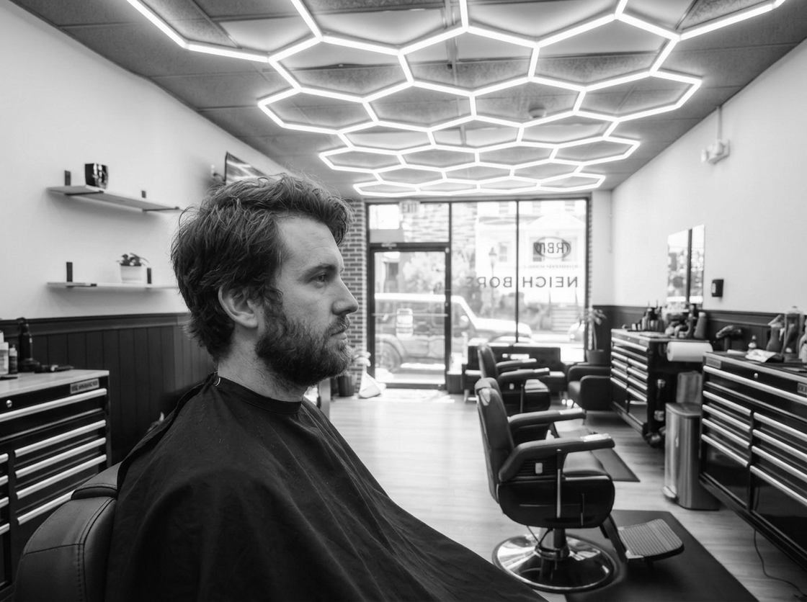
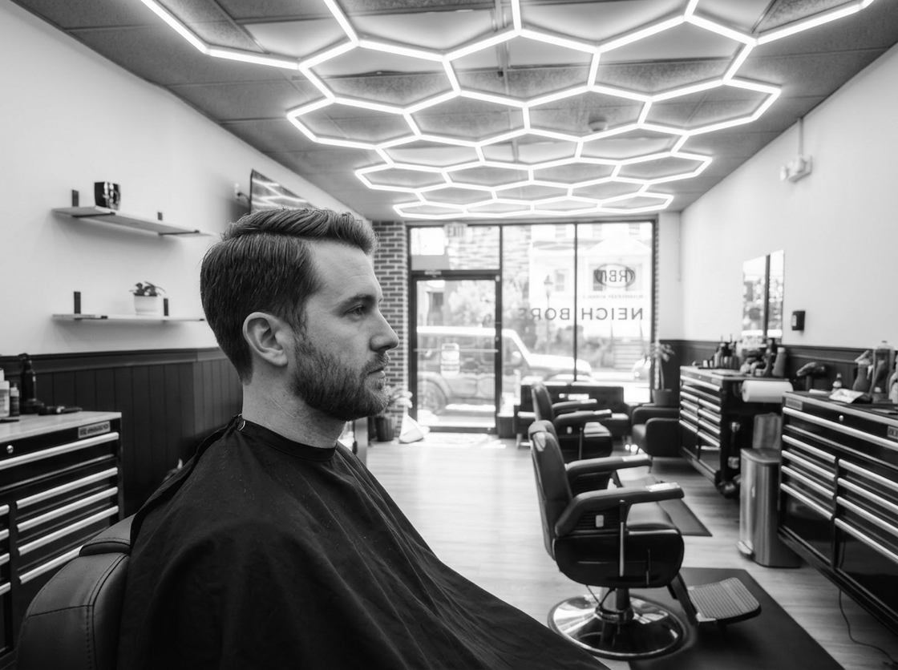

Corte tradicional
Esse é o corte que cresce fácil.
Mais curto nas laterais, mais comprido em cima e um degradê gradual que não vai até a pele. Linhas limpas e uma nuca caprichada, degradê ou natural, você escolhe. Quer risca do lado ou mais comprimento em cima? É só dizer quanto.
Dá para fazer tudo na tesoura ou misturar com a máquina, o que funcionar melhor no seu cabelo. Traz uma foto se tiver. A gente penteia no fim para você ver como fica, e você confere a parte de trás antes de ir embora.
Muita gente começa aqui e depois passa para o fade. Muita gente nunca troca. A maioria volta a cada 3 a 4 semanas.
O corte
Veja a diferença.
Deslize para comparar o cabelo crescido com um corte tradicional clássico.


Perguntas
40 perguntas
Nenhuma pergunta encontrada. Tente outra palavra ou ligue para a gente.
O que é o corte Tradicional Masculino?
Linhas limpas, laterais mais curtas, topo mais comprido. Degradê gradual. Não é skin fade.
Qual a diferença para o skin fade?
A gente não leva até a pele. Fica mais comprimento nas laterais.
Quanto tempo leva?
Uns 30 minutos.
Cresce bem?
Sim. O degradê gradual ajuda a continuar apresentável por mais tempo.
Dá para fazer só na tesoura?
Sim. Só tesoura ou uma mistura de máquina e tesoura.
Quão curtas ficam as laterais?
Mais curtas que o topo, mas sem ficar careca. Controlado e uniforme.
Inclui toalha quente?
Não no corte sozinho. Vem com os serviços de barba.
Bom para a primeira vez?
Sim. Uma boa opção se você ainda não tem certeza do skin fade completo.
Posso levar uma foto?
Sim. Ajuda a gente a ver o comprimento e o formato que você quer.
E se eu quiser as laterais mais curtas da próxima vez?
Tranquilo. Muita gente começa aqui e depois passa para o fade.
Funciona em cabelo grosso?
Sim. A gente modela para não ficar volumoso demais.
E cabelo cacheado?
A gente trabalha com o cacho para manter o formato.
De quanto em quanto tempo eu volto?
A maioria volta a cada 3–4 semanas.
Criança pode fazer esse corte?
Crianças de 12 anos ou menos têm um serviço próprio.
Vocês finalizam o estilo no fim?
Sim, para você ver como fica.
Serve para o trabalho?
Sim. Limpo e direto.
Preciso lavar o cabelo antes?
Não.
Posso acrescentar um aparo de barba?
Sim. Agende Tradicional e Barba.
Quais produtos vocês usam?
O que combinar com o seu cabelo na finalização.
Como eu agendo?
Escolha Tradicional Masculino na página de agendamento.
As laterais ficam irregulares se eu demorar para voltar?
Quase não. Cresce mais uniforme que um fade bem fechado.
Dá para deixar o topo mais comprido?
Sim. É só dizer quanto comprimento você quer.
Funciona com óculos?
Sim. A gente ajusta em volta da armação.
O cabelo cresce rápido nas laterais?
Dá para deixar um pouco mais para não ficar desigual rápido.
Nuca em degradê?
Sim. Degradê limpo ou mais natural — você escolhe.
Serve se estou ficando ralo?
Sim. Dá para deixar mais curto e limpo.
Máquina ou tesoura?
Os dois, ou só tesoura se você preferir.
Posso pedir risco de lado?
Sim.
Vai ficar sem graça?
Um corte tradicional limpo fica afiado sem firula.
Quero mais curto no geral da próxima vez?
É só dizer quanto.
Inclui a nuca?
Sim. A gente limpa a nuca.
Entrada na testa?
A gente modela para ficar equilibrado.
Pouca manutenção?
Basicamente. Não precisa de muito produto.
O que eu devo falar?
Quão curto nas laterais, quanto no topo e qualquer estilo que você goste.
Posso sair de um fade depois?
Sim. Quando você quiser.
Demora mais que um corte máquina?
Sim, por causa da modelagem. Ainda assim uns 30 minutos.
Texturizar o topo?
Se você quiser.
Bom para gente mais velha?
Sim. Muita gente prefere isso a um fade bem fechado.
Dá uma limpada rápida na barba junto?
Melhor agendar Tradicional e Barba para o serviço completo de barba.
Vou atrasar?
Liga ou manda mensagem. A gente tenta te encaixar mesmo assim.